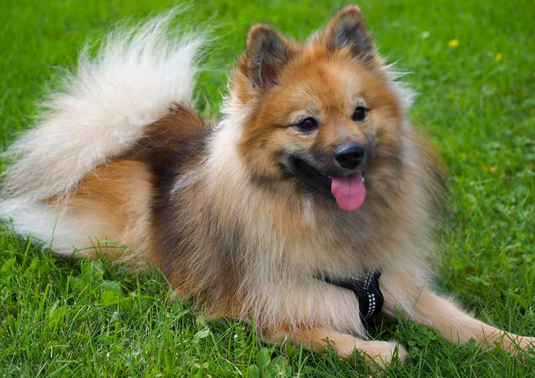

Еще один подвид Немецкого шпица, который входит в стандарт породы, но не имеет собственного. Песиков также вывели в Германии в 17-18 веке, селекционеры изменили только размер собаки (на этот раз животные вырастают до 36 см).

Собаки, как и их сородичи, гиперактивные. Ограничивать их в выгуле не стоит: неуставший питомец выплеснет энергию в доме, сломает мебель, погрызет вещи, испортит обои. Животные покладистые, добрые, ласковые, но неуправляемые (при отсутствии дрессировки). Они эгоистичные, любят внимание. Не бывают агрессивными или озлобленными.
Чтобы дрессировка проходила правильно, Миттели должны принимать ее за игру. Лучше сделать упор на физическую нагрузку, тогда команды запомнятся быстрее. Запрещено ругать Шпица, обзывать или бить.